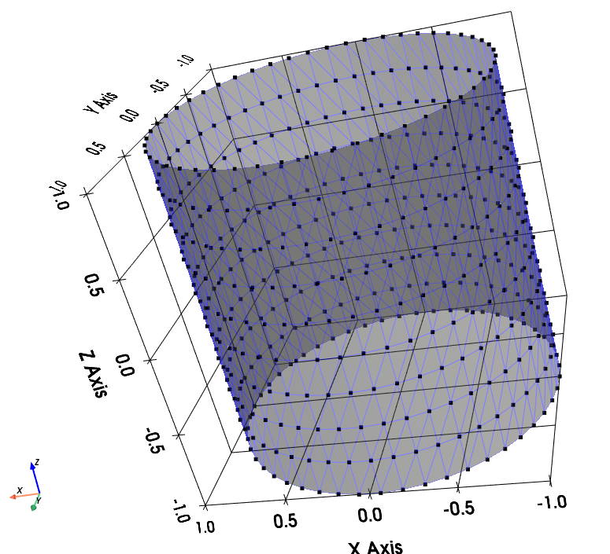
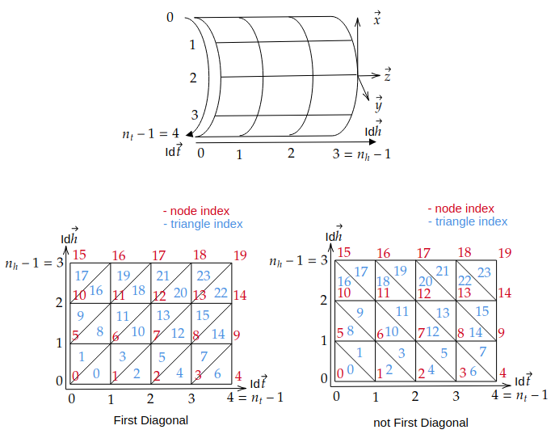
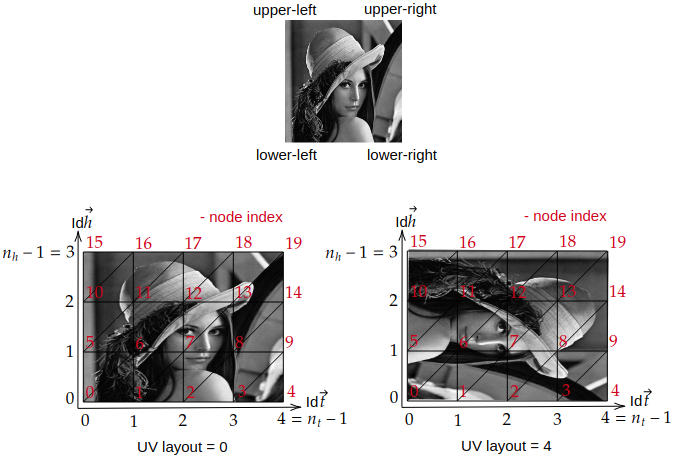

pysdic.create_triangle_3_axisymmetric#
- create_triangle_3_axisymmetric(profile_curve=<function <lambda>>, frame=None, height_bounds=(0.0, 1.0), theta_bounds=(0.0, 6.283185307179586), n_height=10, n_theta=10, closed=False, first_diagonal=True, direct=True, uv_layout=0)[source]#
Create a 3D axisymmetric mesh
Meshusing a given profile curve.The profile curve is a function that takes a single argument (height) and returns the radius at that height. The returned radius must be strictly positive for all z in the range defined by
height_bounds.The
frameparameter defines the orientation and the position of the mesh in 3D space. The axis of symmetry is aligned with the z-axis of the frame, and z=0 corresponds to the origin of the frame. The x-axis of the frame defines the direction of \(\theta=0\), and the y-axis defines the direction of \(\theta=\pi/2\).The
height_boundsparameter defines the vertical extent of the mesh, andtheta_boundsdefines the angular sweep around the axis.n_heightandn_thetadetermine the number of vertices in the height and angular directions, respectively. Nodes are uniformly distributed along both directions.Note
n_heightandn_thetarefer to the number of vertices, not segments.
For example, the following code generates a mesh of a half-cylinder whose flat face is centered on the world x-axis:
from pysdic import create_triangle_3_axisymmetric import numpy as np cylinder_mesh = create_triangle_3_axisymmetric( profile_curve=lambda z: 1.0, height_bounds=(-1.0, 1.0), theta_bounds=(-np.pi/4, np.pi/4), n_height=10, n_theta=20, ) cylinder_mesh.visualize()

Demi-cylinder mesh with the face centered on the world x-axis.#
Nodes are ordered first in theta (indexed by
i_T) and then in height (indexed byi_H). So the vertex at theta indexi_Tand height indexi_H(both starting from 0) is located at:mesh.vertices[i_H * n_theta + i_T, :]
Each quadrilateral element is defined by the vertices:
\((i_T, i_H)\)
\((i_T + 1, i_H)\)
\((i_T + 1, i_H + 1)\)
\((i_T, i_H + 1)\)
This quadrilateral is split into two triangles.
If
closedisTrue, the mesh is closed in the angular direction by adding one more set of elements connecting the last and first theta positions. In that case,theta_boundsare ignored and the theta starts from 0 to \(2\pi(1 - 1/n_{theta})\).To generate a closed full cylinder:
cylinder_mesh = create_triangle_3_axisymmetric( profile_curve=lambda z: 1.0, height_bounds=(-1.0, 1.0), n_height=10, n_theta=50, closed=True, )

Closed cylinder mesh.#
See also
Meshfor more information on how to visualize and manipulate the mesh.Artezaru/py3dframe for details on the
Frameclass.
- Parameters:
profile_curve (Callable[[float], float], optional) – A function that takes a single height coordinate z and returns a strictly positive radius. The default is a function that returns 1.0 for all z.
frame (
Frame, optional) – The reference frame for the mesh. Defaults to the identity frame.height_bounds (Tuple[
float,float], optional) – The lower and upper bounds for the height coordinate. Defaults to(0.0, 1.0). The order determines the direction of vertex placement.theta_bounds (Tuple[
float,float], optional) – The angular sweep in radians. Defaults to(0.0, 2.0 * numpy.pi). The order determines the angular direction of vertex placement. IfclosedisTrue, this parameter is ignored.n_height (
int, optional) – Number of vertices along the height direction. Must be more than 1. Default is10.n_theta (
int, optional) – Number of vertices along the angular direction. Must be more than 1. Default is10.closed (
bool, optional) – IfTrue, the mesh is closed in the angular direction. Default isFalse.first_diagonal (
bool, optional) – IfTrue, the quad is split along the first diagonal (bottom-left to top-right). Default isTrue.direct (
bool, optional) – IfTrue, triangle vertices are ordered counterclockwise for an observer looking from outside the radius. Default isTrue.uv_layout (
int, optional) – The UV mapping strategy. Default is0.
- Returns:
The generated axisymmetric mesh as a
Meshobject.- Return type:
Geometry of the mesh#
Diagonal selection#
According to the
first_diagonalparameter, each quadrilateral face is split into two triangles as follows:If
first_diagonalisTrue:Triangle 1: \((i_T, i_H)\), \((i_T + 1, i_H)\), \((i_T + 1, i_H + 1)\)
Triangle 2: \((i_T, i_H)\), \((i_T + 1, i_H + 1)\), \((i_T, i_H + 1)\)
If
first_diagonalisFalse:Triangle 1: \((i_T, i_H)\), \((i_T + 1, i_H)\), \((i_T, i_H + 1)\)
Triangle 2: \((i_T, i_H + 1)\), \((i_T + 1, i_H)\), \((i_T + 1, i_H + 1)\)

Diagonal selection for splitting quadrilaterals into triangles.#
Notice that if the mesh is closed, the last column of quadrilaterals connecting the last and first theta positions are added at the end of the connectivity list.
Triangle orientation#
If
directisTrue, triangles are oriented counterclockwise for an observer looking from outside the radius (See the Diagonal selection section).If
directisFalse, triangles are oriented clockwise for an observer looking from outside the radius. Switch the order of the last two vertices in each triangle defined above.
UV Mapping#
The UV coordinates are generated based on the vertex positions in the mesh and uniformly distributed in the range [0, 1] for the
OpenGL texture mapping convention(See https://learnopengl.com/Getting-started/Textures). Several UV mapping strategies are available and synthesized in theuv_layoutparameter.An image is defined by its four corners:
Lower-left corner : pitel with array coordinates
image[height-1, 0]but OpenGL convention is (0,0) at lower-leftUpper-left corner : pitel with array coordinates
image[0, 0]but OpenGL convention is (0,1) at upper-leftLower-right corner : pitel with array coordinates
image[height-1, width-1]but OpenGL convention is (1,0) at lower-rightUpper-right corner : pitel with array coordinates
image[0, width-1]but OpenGL convention is (1,1) at upper-right
The following options are available for
uv_layoutand their corresponding vertex mapping:uv_layout
Vertex lower-left corner
Vertex upper-left corner
Vertex lower-right corner
Vertex upper-right corner
0
(0, 0)
(0, n_h-1)
(n_t-1, 0)
(n_t-1, n_h-1)
1
(0, 0)
(n_t-1, 0)
(0, n_h-1)
(n_t-1, n_h-1)
2
(n_t-1, 0)
(0, 0)
(n_t-1, n_h-1)
(0, n_h-1)
3
(0, n_h-1)
(0, 0)
(n_t-1, n_h-1)
(n_t-1, 0)
4
(0, n_h-1)
(n_t-1, n_h-1)
(0, 0)
(n_t-1, 0)
5
(n_t-1, 0)
(n_t-1, n_h-1)
(0, 0)
(0, n_h-1)
6
(n_t-1, n_h-1)
(0, n_h-1)
(n_t-1, 0)
(0, 0)
7
(n_t-1, n_h-1)
(n_t-1, 0)
(0, n_h-1)
(0, 0)
Notice that for a closed mesh, the
n_t - 1becamesn_tin the table above, since the a ‘virtal’ last vertex is the same as the first one.The table above gives for the 4 corners of a image the corresponding vertex in the mesh.

UV mapping strategies for different
uv_layoutoptions.#To check the UV mapping, you can use the following code:
import numpy as np from pysdic import create_triangle_3_axisymmetric import cv2 cylinder_mesh = create_triangle_3_axisymmetric( profile_curve=lambda z: 1.0, height_bounds=(-1.0, 1.0), theta_bounds=(0, np.pi/2), n_height=10, n_theta=20, uv_layout=3, ) image = cv2.imread("lena_image.png") cylinder_mesh.visualize_texture(image)

UV mapping of the Lena image on a demi-cylinder mesh with
uv_layout=3.#
{kind=link}
{kind=link}
{kind=link}